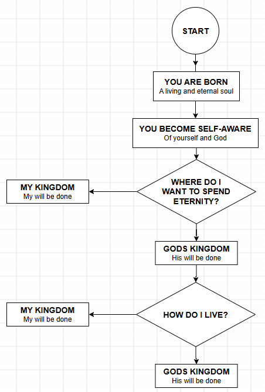

Part @@N@@ of The Soul series.
Do you realize you are an eternal living soul? I'm sure you do, but it's easy to forget — to stay so focused on this life, the here and now, that the thought never really lands. That's the malady of mankind. So let's actually sit with the implications for a minute. Simply put, nothing else in your life matters as much as this. As a result, you really only have two decisions to make in your entire life: 1) Where do I want my soul to spend eternity? 2) In what condition do I want my soul to be in eternity?
I ran that thought past AI to see if I was oversimplifying, and here's what came back:
Yes, that's a solid and accurate summary. To state it precisely: your one decision about Christ determines where your soul ends up (heaven or hell) — a single settled matter, not a cumulative score. But once that's settled, your ongoing actions and decisions — how you steward your time, gifts, relationships, and obedience to God — do shape the condition of your soul's existence there: how much reward it carries, how much responsibility and authority it's entrusted with, and how much of your life's “work” survives versus burns away (1 Corinthians 3:11–15; Matthew 25:21; 2 Corinthians 5:10).
I mapped it out as a simple flowchart. You're born an eternal soul. You become self-aware — of yourself and of God. Then the first fork: where do I want to spend eternity, my kingdom or His? And once that's settled, a second, ongoing fork keeps showing up every day for the rest of your life: how do I live, my will or His?

The first fork only has to be answered once, and it settles the eternal destination. The second fork never stops — it's the daily, ordinary choice of whose will gets done in the small stuff, and it's the one that shapes the condition of the soul that arrives.
Underneath both of those decisions is a word that's easy to use casually and rarely stop to actually study: soul. So I did a Bible word study on it, tracing every occurrence across the Hebrew Old Testament and the Greek New Testament. It ran long enough that I split it into two companion posts rather than cramming it in here:
- The Soul: Old Testament Word Study — every Hebrew word behind “soul,” led by nephesh (נֶפֶשׁ), across 39 occurrences.
- The Soul: New Testament Word Study — the single Greek word behind “soul,” psychē (ψυχή), across all 47 occurrences.
- The Soul: References — what theologians and biblical scholars say about what a soul is, whether it's eternal by nature, and how your earthly choices shape its eternal condition.
Worth the read if you want to see just how much Scripture has to say about the thing each of us actually is. — Erv
Comments